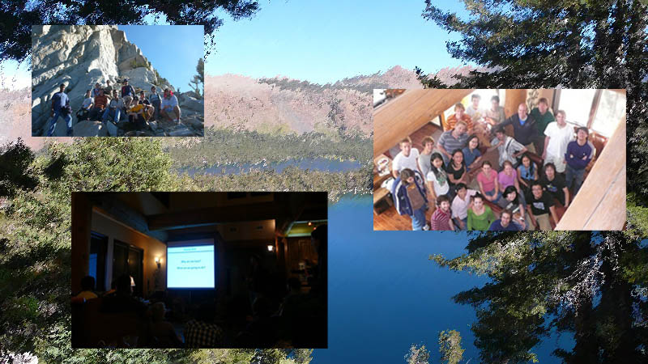
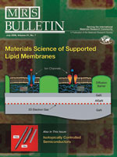

|
Recent Groves Lab News
September 2012
Groves Lab retreat to the Mammoth Lakes!
September 2011
Groves Lab retreat to the Mammoth Lakes!
February 2011
HHMI Bulletin Chronicle "Enforcing Order"
Read HHMI Bulletin
September 2010
Dr. Samuel Lord receives American Chemical Society's 2010-2012 Irving S. Sigal Postdoctoral Fellowship.
Read C&EN >> Awards
September 2010
Groves Lab retreat to the Mammoth Lakes!

January 2010
New group website open:) Hope we can update news more often now.
October 2008
The Groves Lab would like to
congratulate Khalid Salaita and Nathan Clack for being finalists in the 2008
Collegiate Inventors Competition.
See also, Berkeley news release: Read
See also, Collegiate Inventor's Website: Read
October 2008
The Groves Lab would like to welcome
Il-Hyung Lee, Geoffrey O'Donoghue, and Hsiung-Lin Tu to the group.
June 2008
The Groves Lab would like to welcome
Eldon Ho to the group.
May 2008
The Groves Lab would like to welcome Qian Xu (Elizabeth) and Alex
Smoligovets to the group.
27 May 2008
Jay T. Groves has been appointed as a
Howard Hughes Medical Institute (HHMI) investigator.
See also, Berkeley news
release: Read
See also, Jay T. Groves' HHMI Profile: Read
08 April 2008
The Groves Lab has moved! Come
visit us in our new home in 424 Stanley Hall.
March 2008
The Groves Lab would like to welcome
Adam Smith to the group.
24 October 2007
The Groves Lab has won the 2007
LBNL award for Excellence in Technology Transfer for the development and
successful licensing of Membrane Derivatized Colloids and the Colorimetric
Bio-Barcode Amplification Assay.
Read about Membrane Derivatized Colloids...
Read about the Bio-Barcode assay...
November 2007
The Groves Lab would like to
welcome Rebecca Petit and Sara Curtiss to the group.
October 2007
The Groves Lab would like to welcome
Hung-Jen Wu to the group.
July 2007
The Groves Lab would like to welcome Wan-Chen Lin to the group.
16 January 2007
Andy DeMond's work is featured in
recent ACS
Chemical Biology Spotlight.
Read the article...
12 January 2007
Raghu's artwork is
featured on the cover of Soft
Matter.
Read the article...
July 2006
Be sure to read this month's special MRS
Bulletin on "Materials
Science of Supported Lipid Membranes."
Read the cover article...
May 2006
The Groves Lab would like to welcome
Neil Switz and Hector Huang to the group, as well as congratulate Kaspar Mossman
on successfully completing his Ph.D!
07 October 2005
The Groves Lab would like to
welcome Nina Caculitan to the group.
20 July 2005
Congratulations to Raghu and Julie
on the birth of their son, Kiran!
02 June 2005
Raghu's PNAS article, "Protein patterns at lipid bilayer junctions" is one of the top
100 most downloaded PNAS papers of 2004.
13 April 2005
Coming May 7, the QB3 Symposium on Cell
Membrane Systems and Technology. Poster submissions are welcome.
12 March 2005
beta-Damascenone, the ACS Molecule of the Week...
 "Tequila, made from distilled fermented agave
cactus juice, contains more than 60 scent compounds, including woody,
fruity-smelling beta-damascenone. While you're at the National Meeting in
San Diego, be sure and see the agave plants in Balboa Park's Desert
Garden." "Tequila, made from distilled fermented agave
cactus juice, contains more than 60 scent compounds, including woody,
fruity-smelling beta-damascenone. While you're at the National Meeting in
San Diego, be sure and see the agave plants in Balboa Park's Desert
Garden."
10 March 2005
Jwa-Min Nam has been selected for
Who's Who in Nanotechnology.
06 December 2004
Bryan Jackson and Kaspar
Mossman's poster at the Fall MRS meeting in Boston was nominated for Best
Poster.
01 November 2004
The Groves Lab would like to
welcome Pradeep Nair to the group.
31 August 2004
Raghu's work on lipid patterns at model membrane
junctions is featured on the cover of PNAS.
01 May 2004
Bryan and Kaspar win $250 for their poster at the 2004
Berkeley Nanotechnology Forum.
23 April 2004
The Groves Lab would like to
welcome Boryana Rossenova to the
group.
09 April 2004
Jay T. Groves receives 2004 Beckman
Young Investigator Award. Read
more...
01 April 2004
More news featuring our membrane
colloid project...
- Biophotonics International, "Biophotonics
Research"
09 January 2004
News features of our membrane
colloid project...
- Nature News & Views, "A glass bead game"
- Chemical
& Engineering News, "On the
ball"
- UC Berkeley News, "Membrane-coated
beads..."
30 October 2003
And that's not all... the Groves
Lab would also like to welcome Amber Wise to the
group.
14 October 2003
The Groves Lab would like to
welcome Joe Hickey to the group.
19 September 2003
Jay T. Groves named among
MIT Technology Review's Top Young Innovators. Read
more...
24 October 2002
New biophotonics center will
apply state-of-the-art optical tools to medicine, biology. Read
more...
|


{kind=link}